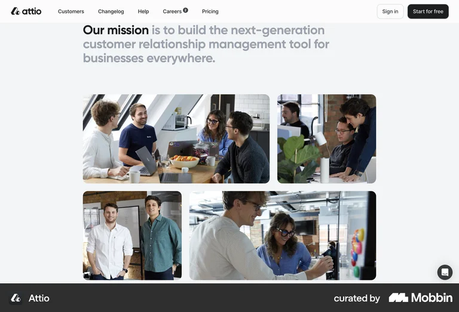
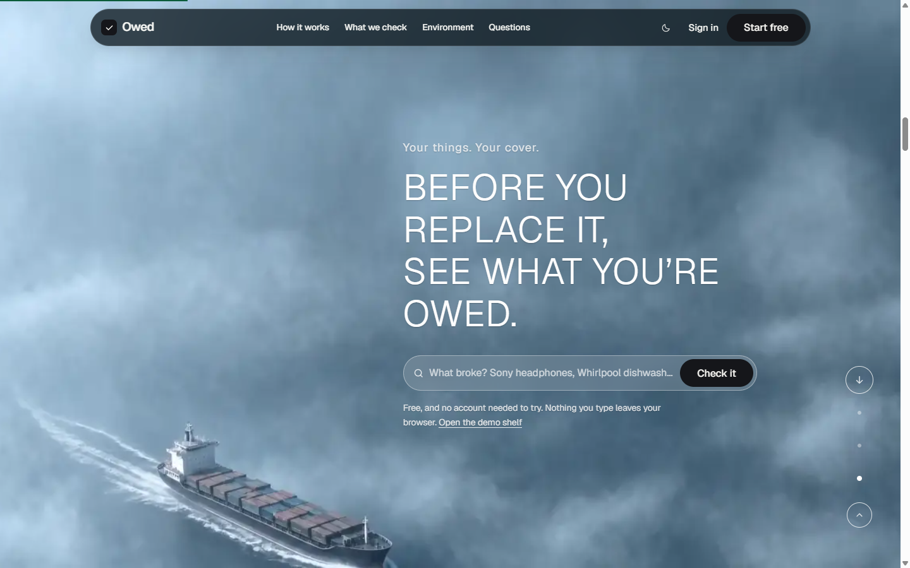
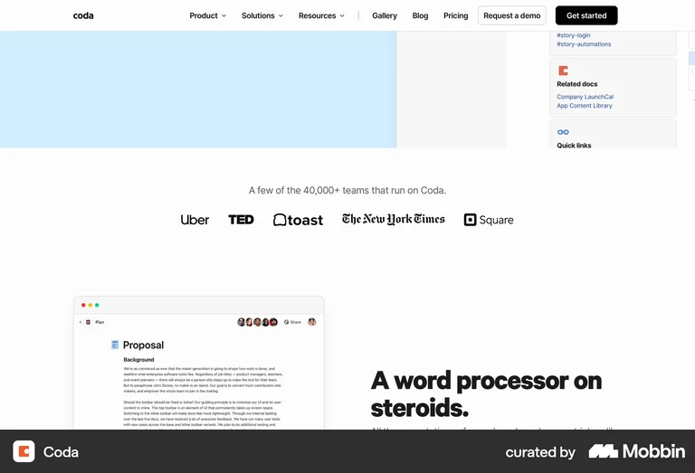
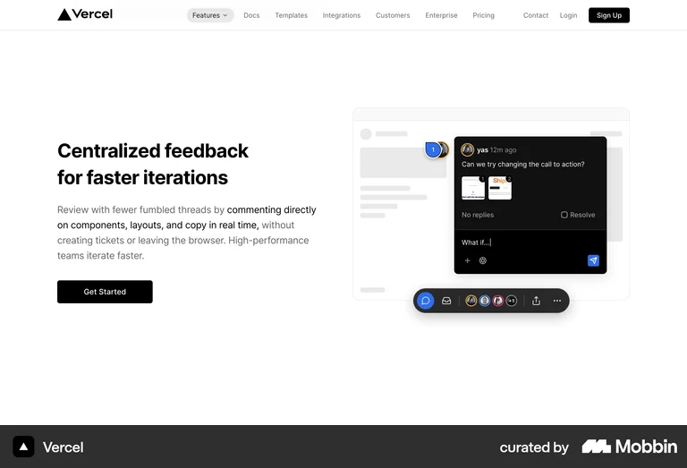
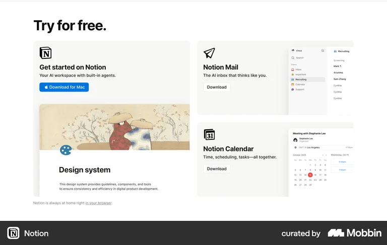
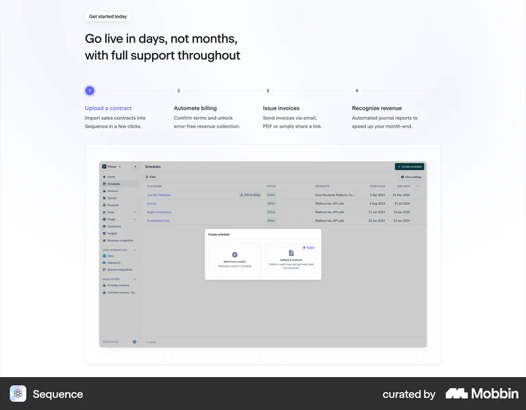
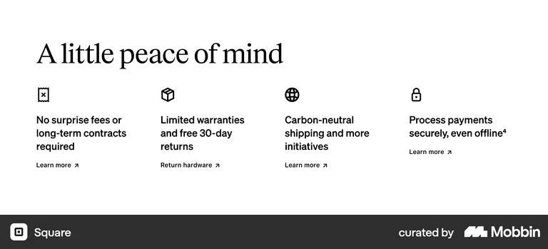
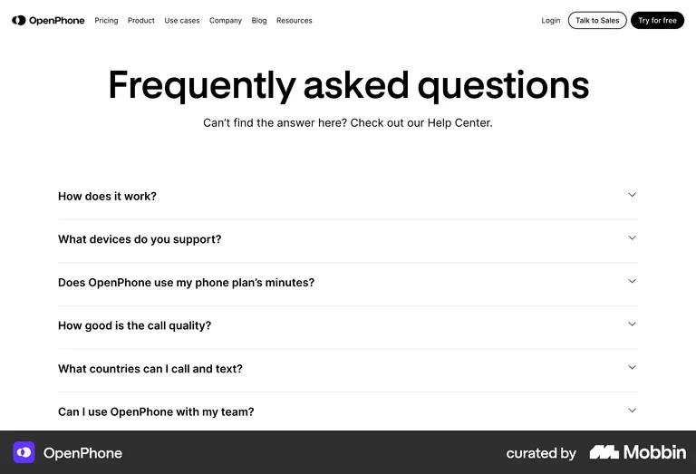
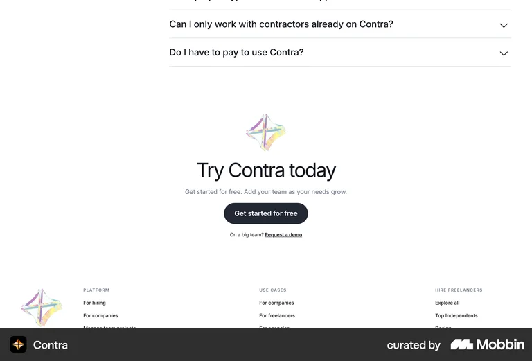
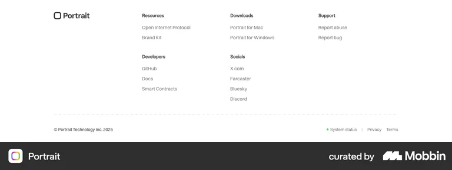

Owed — the new landing page, part by part
Top to bottom, in page order. Each part is copied from one brand's section on Mobbin (one brand per part, none repeated), with only the words and Owed's own app screenshots changed. Everything sits on pure white with black type and black buttons. Swap any part before I build it.
01NavigationFlat white bar, 15px links, outlined "Sign in", solid black "Start free" (40px, radius 8)Attio

02The filmKept as is: scroll-scrubbed footage, three chapters, the "what broke?" field. Now runs on a frame sequence, no more stutterOwed

03The paper flythroughRestored: the camera flies into a corridor of fine print, one bold line at a time in the middle, four verdict cards floating pastOwed
Every warranty. Every card benefit. Every payout nobody collects.→ "318 rules deep, and none of it is written for you." → "One of them says your repair is free." (existing WebGL scene, re-set in the new bold type)
04Read fromOne grey sentence and a row of black names: the real sources in the rulebook (Apple, Samsung, Dyson, Bosch, Visa, American Express, EUR-Lex, legislation.gov.uk)Coda

05The scriptBold two-line heading, grey body with the key clause in black, one black button; the real script panel in a bordered card with a dark callout and a black pill toolbarVercel

06Inside OwedOne tall card and two stacked cards, screenshots bleeding off the card edges: the whole app, the ranked result, the words to sayNotion

07How it worksPill tag, heading, four numbered steps on a connector line, then the app in a bordered screenshot cardSequence

08In numbers318 rules · 194 brands · 4 regions · $0, bold black numbers with grey labels, nothing elseRamp
09Five places cover hidesColumns with a line icon, one short bold sentence each, a "Learn more" link: maker warranty, card, payouts, repair programmes, the lawSquare

10EnvironmentOne bordered card of four sourced facts (80% charge after 800 cycles, 7 years of parts, +12 months for choosing repair, 3–6 years in Quebec) with a black button row, then a coverage card with a barNorma

11QuestionsHuge bold centred heading, a sub-line, hairline rows with a chevron; the first answer openOpenPhone

12ClosingMark, heading, one grey line, one black button, a small underlined link — straight into the footerContra

13FooterWordmark, three link columns, a dashed divider, one copyright linePortrait

Type across all of it: Geist 700 for headings (54px section heads, tracking −0.035em, line-height 1.04, measured live on notion.com), 16/24 grey body (#666), #EAEAEA hairlines, black #000 buttons at radius 8. Nav, showcase and footer references are Attio, Vercel and Portrait so no brand appears twice.